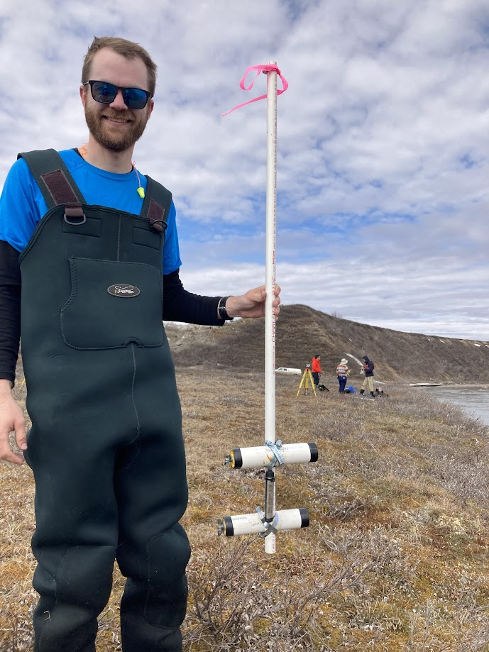
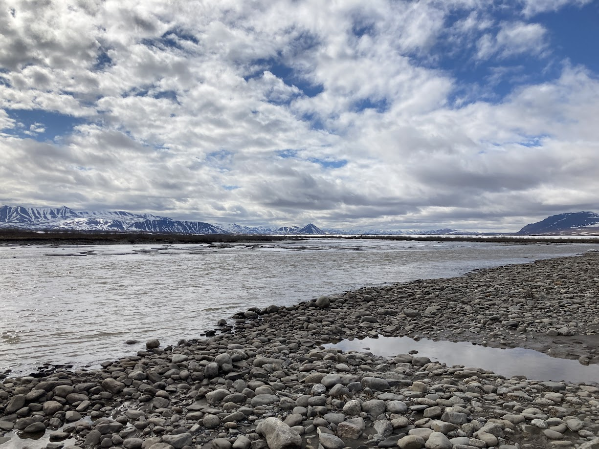
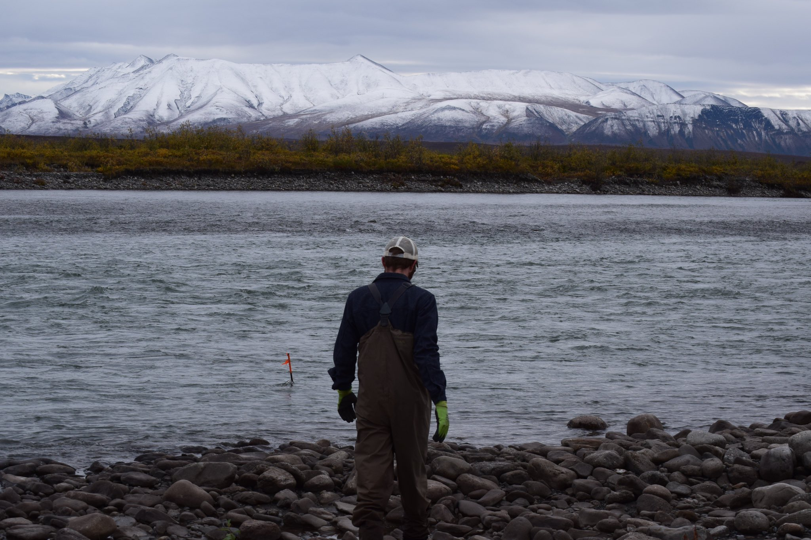

Sagavanirktok River
Sediment transport on the Sagavanirktok River, Alaska
Remote sensing of river discharge and suspended sediment concentration has seen big improvements in the past decade. It's now possible to combine these algorithms to use satellite images to estimate the sediment flux of a river. This work is currently in preparation, but has been years in the making, with the first remote sensing work being completed in 2019 and field work in 2021 and 2022 for validation data. This project was the impetus for OpenOBS, after realizing I did not have the budget for even 1 deployable commercial turbidity sensor. We have used these sensors extensively in the Sag, deploying 10 each year in order to monitor months of turbidity changes in high resolution.
Ellie Friedmann installing sensors in the Sag.
The sensor setup for one site (2 OpenOBS and a pressure logger) before being installed in 2022.
The Sag at low flow in August 2021, showing off its gravel bed and headwaters in the Brooks Range Mountains.
Pulling rebar-mounted sensors at the end of the 2021 season.